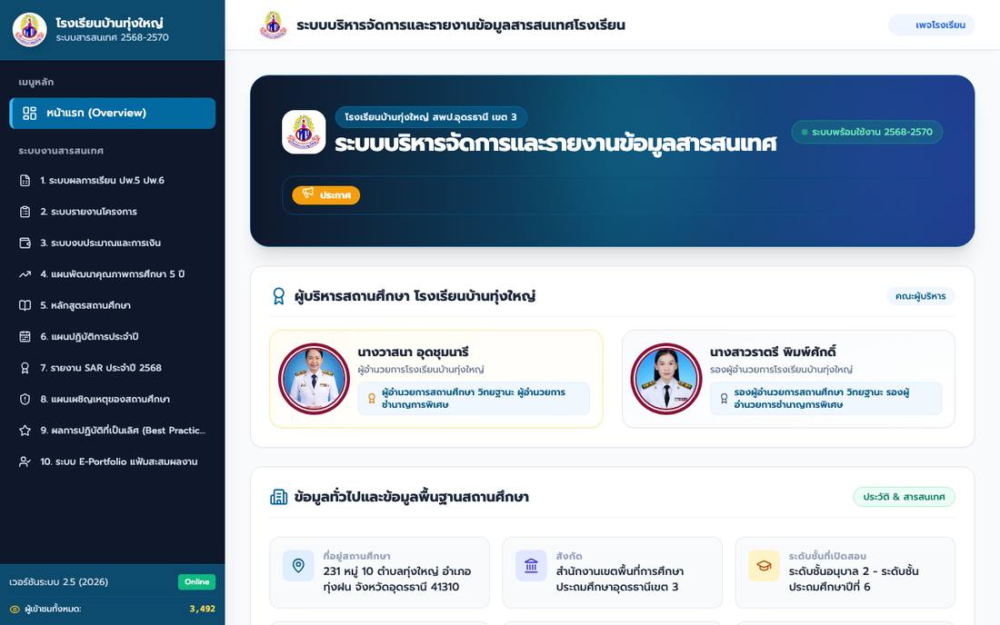
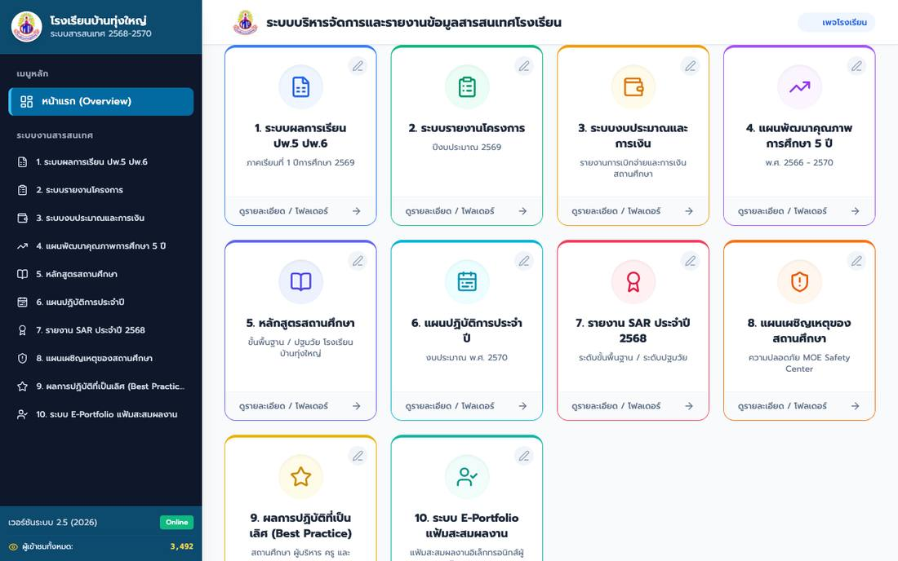
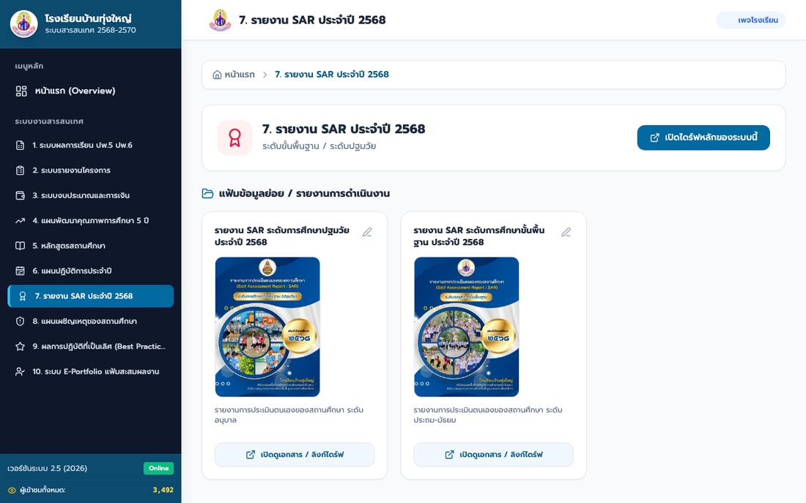

เริ่มใช้ใน 3 ขั้นตอน

1เปิดเว็บไซต์ระบบ
สแกน QR หรือพิมพ์ลิงก์ด้านบน หน้าแรกแสดงประกาศ ผู้บริหาร และข้อมูลพื้นฐานของโรงเรียน

2เลือกระบบที่ต้องการ
กดการ์ดระบบที่หน้าแรก หรือกดชื่อระบบจากเมนูด้านซ้าย ผลเหมือนกัน

3เปิดเอกสาร
กดปุ่ม เปิดดูเอกสาร / ลิงก์ไดร์ฟ ใต้แฟ้ม เอกสารจะเปิดในแท็บใหม่
10 ระบบ มีอะไรบ้าง
1ผลการเรียน ปพ.5 ปพ.6ปฐมวัย · ป.1–3 · ป.4–6 ภาคเรียนที่ 1/2569
กำลังเพิ่มเอกสาร
2รายงานโครงการ22 โครงการ ปีงบประมาณ 2569 แยก 4 กลุ่มงาน
กำลังเพิ่มเอกสาร
3งบประมาณและการเงินรายงานการเงิน การเบิกจ่าย และพัสดุ
ปิดปรับปรุง
4แผนพัฒนาคุณภาพการศึกษา 5 ปีพ.ศ. 2566–2570 เล่มแผนฉบับสมบูรณ์
พร้อมใช้งาน
5หลักสูตรสถานศึกษาปฐมวัย และขั้นพื้นฐาน ฉบับปรับปรุง 2569
พร้อมใช้งาน
6แผนปฏิบัติการประจำปีงบประมาณ 2570 · เปิดเป็นเว็บในแท็บใหม่
พร้อมใช้งาน
7รายงาน SAR ประจำปี 2568ระดับปฐมวัย และระดับขั้นพื้นฐาน
พร้อมใช้งาน
8แผนเผชิญเหตุของสถานศึกษาความปลอดภัย MOE Safety Center 2569
พร้อมใช้งาน
9ผลการปฏิบัติที่เป็นเลิศ (Best Practice)ผลงานผู้บริหาร ครู และเกียรติบัตร 33 รายการ
พร้อมใช้งาน
10E-Portfolio แฟ้มสะสมผลงานแฟ้มรายบุคคลของผู้บริหารและครู
พร้อมใช้งาน
สถานะ ณ วันที่ 11 พฤศจิกายน 2569 · “กำลังเพิ่มเอกสาร” หมายถึงมีหัวข้อในระบบแล้ว แต่ไฟล์ยังทยอยนำขึ้น
ใช้บนมือถือ
- กดปุ่ม ☰ (สามขีด) มุมซ้ายบนเพื่อเปิดเมนู
- กดชื่อระบบ เมนูจะปิดเองและพาไปหน้านั้น
- เพิ่มเว็บไว้บนหน้าจอหลักเพื่อเข้าได้ในครั้งเดียว
ถ้าเปิดไม่ได้
- ขึ้นว่า “คุณต้องมีสิทธิ์เข้าถึง” กดขอสิทธิ์ หรือแจ้งผู้ดูแลระบบให้เปิดแชร์ไฟล์
- หน้าจอว่างหรือโหลดช้า รอสักครู่ แล้วรีเฟรช หรือเปิดด้วย Google Chrome
- กดระบบ 6 แล้วไปอีกเว็บ เป็นปกติ ปิดแท็บนั้นเพื่อกลับมาระบบหลัก